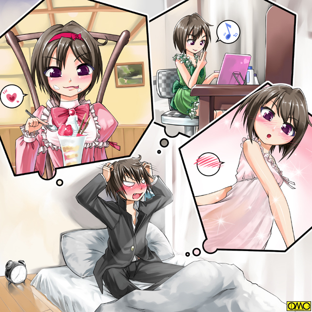

夕暮れの東京湾。
汚れた海だが夕日が水面に映るとさすがに美しい。
ある人はぼんやりと海を眺め。
ある人は港での作業の一部で海を見ていたりしていた。
「ん？」
そんな一人が気がつく。誰かが泳いでいる。気がついたものが仰天する。
暖かくはなってきたもののまだ三月。とてもじゃないが『水遊び』の季節ではない。
それなのに女の子が泳いでいたからだ。それもスクール水着姿。
「なんだ？」
そう思っていたら巡視艇がやってきた。
警告をする前にその女の子…セーラから近寄ってきた。
「すいませーん。この子を助けてあげてくれますぅ？」
可愛らしい声で甘ったるい口調。いかにも女の子と言う感じの喋り方だ。
「あ…ああ」
少女に似つかわしくない豊満な二つのふくらみにその乗り組み員は目のやり場に困る。
視線をはずすともう一人の存在に気がつく。ぐったりしている。溺れたのかと巡視艇のクルーは思う。
とにかく引き上げる。ところが驚いた。全裸だ。なおさら目のやり場がなくなる。
そう。彼女は魚住平と言う少年だった存在。アマッドネスの犠牲者の例に漏れず女性化してしまった。
「お…おい。毛布だ。毛布を持ってこい」
水難事故から救助した人のために用意してあった。保温の意味でも包まれる。
「ああ。良かった。あたし一人ならいいんですけど、さすがに抱えて泳ぎ続けるのはきつくて」
天真爛漫な女性的な笑顔のセーラ。
「抱えて泳ぐって…一体東京湾で泳いでどうするつもりだ？」
セーラはにっこり笑って言う。
「女の子にはいっぱい秘密があるんですよ」
それだけ言うと水中に消える。あっと言う間に港にたどり着く。
「は…速い。まるで魚…いや。人魚だ」
呆然と見送るだけだった。
戦乙女セーラ
ＥＰＩＳＯＤＥ７「残響」
港につくとセーラは水から上がる。
当然だが注目を浴びる。
そりゃそうだ。東京湾をスクール水着姿の女の子が泳いでいればいやでも目立つ。
「うーん。仕方ないわね。えい」
目の前で体操服姿になったので驚く面々。その中をヴァルキリアフォームの俊足で抜け出した。
適当なところでエンジェルフォームに。ガントレットはブレスレットに戻してある。
「便利だわ。フォームチェンジしたら乾いちゃった」
分解して再構築されるのだ。その際に余計な水分などは散らされる。
それより口調がいやに柔らかい。そちらの方が問題だった。
（セーラ様。ご無事ですか？）
頭の中に従者の声が響く。
（あっ。キャロル。うん。平気よ）
（「平気よ」って…セーラ様。その口調）
（どこか変？ ごく普通の女の子の喋り方と思うけど）
（「普通の女の子」って…あの、ご自分のお名前いえます？）
（何よ？ あなたが言ってるでしょ。セーラだって。あ、でもハーフにも見えない顔だから「セーラ」よりは「せいら」と名乗っとこうかしら。あたしの本名も読みは「キヨシ」じゃなく「せいら」が本当だし）
（えっ？ そうなんですか？）
これはキャロルも知らなかった。
（うん。女の子みたいとからかわれて反発してトレーニングを続けて鍛え上げられちゃったのよね。さらに反発して「不良呼ばわり」）
（それであんなに立派な体格なんですね）
（そうなのよ。でも……今は女の子でいたい。そんな気分）
（あああっ。やっぱりっ）
どうやら何か懸念していた事態に直面したらしい。
（何が「やっぱり」なの？）
（い…いいえ。なんでもありません）
（ふーん。まぁいいわ。それよりこれから帰るわね。今更学校にも戻れないからウチにそのまま帰るわ。幸いお金はあるし、フェアリーで飛んで帰ると目立つから電車で帰るわね。そろそろ寒くないし、散歩がてら）
鼻歌でも歌いだしかねないセーラ。そして通信を打ち切ってしまった。
「さぁて…その前にこの服をどうにかしたいわね」
セーラー服自体は自分の学校の女子制服がモデル。ただこの辺りに学校がない。目立つことこの上ないのだ。
（そういえばこの服もイメージで出来たものだとキャロルが言っていたわね。もしかして）
人気のないところに行くとセーラは別の服のイメージを浮かべてみた。
するとセーラー服が見る見るうちに春物のピンクのワンピースに変わっていく。
いたるところにフリルとレース。リボンがありまるでパーティードレス。
街を歩くにはぎりぎりだった。
「きゃーっ。やっぱり。こういうことが出来るのね。もしかしたら他のフォームでも違う服になれるのかしら？ マーメイドでスク水じゃなくてビキニとか」
浮かれきったセーラの口調。高岩清良としての男っぽさどころか、普段の戦闘時の凛々しさもない。
そこにいるのはどこにでもいそうな可愛い女の子。
「どこかに鏡ないかしら？」
彼女は自分の姿を見るべく歩き出す。
大通りに出るとけたたましいサイレンの音が。そしてパトカーが走り去っていく。
人々の注目がそちらに集まる。セーラとて例外ではない。
「なにかあったのかしら？ でもアマッドネスの気配は感じないし、おまわりさんにお任せしましょ。今のあたしは『か弱い女の子』だし」
鼻歌交じりに歩き出す。
そのころ、サラ金強盗をした男。馬場が路地裏で荒い呼吸を整えていた。警察は彼を追っていた。
「や…やったぜ。サツは行っちまったな。逃げ切ってやる。絶対に」
大金の入ったバッグを抱えて馬場はなるべく普通に振舞い歩き出した。
戦闘後でもありすでに夕方。
軽く空腹感を覚えたセーラは、幸いサイフを持っていたため喫茶店に入ってケーキセットを注文した。
余談だがサイフも変身の影響か可愛らしい女の子むけデザインに変化していた。
「お待たせいたしました」
ストロベリータルトとアッサムという組み合わせである。
紅茶を一口飲んで口を湿らせ、タルトを一切れほおばる。
その表情が歓喜に変わる。グルメ番組のリポーターになれそうなくらいに『美味しい』と表情で語っていた。
（甘くて美味しいー。あたし普段（男のとき）は甘いの苦手なはずなのに何故か注文しちゃったけど食べてみたら美味しい。やっぱり味覚も女の子のそれになっているのかしら？）
セーラは何も考えずにケーキセットを平らげて、幸せな気分になった。
店を出る前にトイレに入る。
何の迷いもなく座って用を足す。スカートをまくるのもショーツを下ろすのも、そして股間に何もないことにも違和感を感じない。
手を洗うために洗面台に。そして鏡を見る。それで思い出した。自分がどんな姿をしているか見るという目的のほうを。
「うわぁ…自分で言うのもなんだけど似合っているわ。服が可愛いし。でも…もうちょっと胸があってもいいよね。今度（Ｅカップの）マーメイドフォームで試してみようかな？」
そして改めて鏡で顔を見る。まだあどけない少女の顔。ふと閃きが。
大胆にも馬場はネットカフェに入る。人のやたら多いところにまぎれるというのは考えても、まさか不特定多数と共に過ごすネットカフェは警察としても盲点である。
もっとも過去に宿を取った犯罪者が皆無でもないが。
まだ非常線が張られているだろう。朝を待ちラッシュにまぎれて電車で移動と言うつもりだった。
駅前の１００円ショップ。
そこでセーラは口紅など化粧品を買い込んだ。手持ちではこれがいいところ。
また初めてでありためしである。いきなり高いものは買えない。
「うふふ。お家に帰ったら楽しみだわ」
彼女はようやく家路につく。
帰宅したのはいいものの、ここばかりはさすがに女の子のままでは入れない。
「仕方ないわね。じゃ」
セーラは意識を変える。ここでやっと清良の姿に戻る。苦虫を噛み潰した表情に。
「うええ。やっぱりむさくるしいわ。男の姿は。でもお家に入るまでのガマン」
清良は喋ると女っぽさが出るため無言で家に入る。
「あら。せいら。お帰り」
品のいい中年女性が出迎える。多少はふけているが美人といえる顔立ち。長い髪を纏め上げている。
時間とエプロン姿であることから夕食の準備中か。
「お母さん。ただいまぁ」
つい「女性的に愛想良く」答えてしまう清良。
「あらあら。ご機嫌ね。それに今日は『せいら』と呼んでも怒らないのね。それにいつもは『オフクロ』なのに」
「え…だって本当の名前だし」
いつもの清良のように無骨な口調にしたいのだが、意識が女の今ではそっちの方が無理がある。
「そうね。待っててね。もうちょっとでご飯できるから」
「ああ」
短く答えてごまかすようにトイレに。
（ふぅー。ばれなかったかしら。なんかトイレに入ってほっとしたら本当にしたくなってきた。ついでに）
清良はズボンのジッパーを下ろしてパンツの前を開いて…そこから先が出来ない。
（だめ…触るのが気持ち悪いかも）
あろうことか自分の肉体の一部である『男のシンボル』に触れない。グロテスクに感じる。
（なんでぇ？ 体の一部なのに…あああ。漏れそう。仕方ないわ）
瞬間的にセーラー服姿に「変身」。そして間に合った。
（ふう。なんだか今はスカートの方が違和感ないのよね）
２重の意味でほっとする。
再び男に『変身』して何とかごまかして夕食を済ますと自室に閉じこもる。
鍵までかけてから女に『戻る』。
「あー。なんかこっちの方が落ち着くわね。ついでに」
戦闘服であるセーラー服から街を歩いていたのとは違うタイプの可愛いワンピースに。
そして買い込んだ化粧品でメイクを楽しみ始めた。
「な…何をなさっているのですか？ セーラ様」
従者が来たのはまさにそんな時。
「あ。キャロル。どう？ 似合う？」
いきなり尋ねるセーラ。今度はもう少し落ち着いた緑のワンピース姿。
服は地味だがルージュが華やかな印象を与えていた。
「お…お似合いです。セーラ様」
口ごもったのはごまかしに掛かったからではなく、かつてのセーラを思い出したから。
「やはり魂は同じですね。かつてのセーラ様も髪こそ戦いの邪魔にならないように短くしてましたがおしゃれな方でした。紅を差すことも珍しくなく。お懐かしい」
だからか「高岩清良」がしたことない化粧が「初めて」で見事に決まっている。
「うふふ。ありがとう。さぁ。服の変化ができるとわかったのならちょっとしたファッションショーね」
その言葉どおりセーラは次々と衣装を変えて楽しんでいた。
そのどれもが可愛らしいデザインの服であった。
さすがに疲れて眠る時が来たがそのときでさえネグリジェに変化させるほどである。
「ねえキャロル。ちょっとこれ大胆かな」
それも比較的露出が高くボディラインのくっきり出る物だ。
寝るときに着る物だからゆったりしているはずなのにこれである。確かに大胆だ。
「そうですねぇ。少々セーラ様には大人びているのではないかと」
「あんっ。キャロルのいじわる。いいもん。もう寝ちゃう」
ふざけてふてくされてみせる。言葉と裏腹に上機嫌。
たくさん着飾ることが出来たからであろう。まさに女心。
眠りに落ちた瞬間に、つまり意識を失ったら本来の高岩清良に戻る。服も帰ってきてからの部屋着に。
メイクは寝る前に落としていたので問題ないが、もしかしたらこれもなくなっていたかもしれない。
「ふう。目が覚めてから大変だろうな」
憂鬱になるキャロル。
深夜のネットカフェ。馬場はバッグを抱えたまま眠っていた。
日雇いの仕事を得ているホームレスが宿とするのは珍しくない。
だから馬場もそんな一人と思われて通報はされていなかった。
朝。清良はまどろんでいた。
（あれ？ 俺いつのまに部屋に…えーっと…ピラニアやろうを追って、川に飛び込んで何とか勝って…それから…）
ぼんやりした頭で前日の行動を思い起こす。
そう。可愛いワンピースに喜び、甘いケーキに浮かれ、自発的に化粧までしていた前日の行動を。
しまいにはとんでもなくセクシーなネグリジェを身にまとってまでいた。
「ああああああっ。オレはなんてことを」
真赤になって頭をかきむしる。そうしたところで「やってしまったこと」はなくならない。
清良は猛烈に恥ずかしくなり布団にもぐりこんだ。
悪い夢であってくれと祈る。しかし現実だ。前夜は完璧に「女の子らしく振舞っていた」のは。
それも相当に調子に乗っていた。

このイラストはＯＭＣによって作成されました。
クリエイターのていくあうとさんに感謝！
さらに時間が経つ。朝食の時間で家族が起こしに来るが彼は一向に出ようとしない。
キャロルには理由がわかっていた。
諦めて去って行ったころにキャロルがちょこんと布団の側に。
「えーとですね…セーラ様は最初に肉体が女性になりますが、時間と共に精神もシンクロしていくのですよ。それが進むと心と体が一致して強さを増すのですが、ある一定を過ぎると過剰にシンクロして『女性としての意識』が勝ってしまうのですよ。戦闘終了後に女言葉になっているのはその表れで」
布団の中に引きこもる主の傍らで説明を続ける従者。
「それでも１０分程度なら解除すればリセットされるのですが、昨日の場合は長すぎて完全に自意識が女性になってしまいいわば『基本が女性で男に変身する』形になってたんですね。あのセーラ様？ 聞いてます？」
「うるせえうるせえうるせぇーっっっ」
あくまで布団を被ったまま怒鳴る。
「あんな恥ずかしい思いはもうたくさんだ。俺はもう変身しねえぞ」
（ああ。こうなるのが見えていたから言いたくなかったのだが）
人間だったらため息をつきそうなキャロルである。
そのころ、何とか夜を明かした馬場は非常線とかも回避したのに職務質問に引っかかって警察官に追われていた。
（チキショウ！ あと少しだったのに。何とか逃げ切れば）
（ふふ。その足では無理だろう）
馬場はぎょっとなった。警察官に追いつかれて耳打ちされたかと思ったが違う。
（このラブレが力を貸してやろう。お前に追いつけるものはいなくなる）
その「悪意の塊」は馬場の返事も聞かずに体内にもぐりこむ。
「ううっ」
馬場は立ち止まる。
「？」
転んだとかならいざ知らず立ち止まるとは…自首も考えにくいがとにかく警官は追いつく。
ところが立ち止まっていた強盗は膨らんでいく。
顔は長くなりチェスのナイトを彷彿とさせる。
下半身は異様に膨らむ。そして馬の胴体と脚を作り上げる。
逞しい肉体だが豊満な乳房が辛うじて女であることを示していた。
「な…なんだぁーッ」
パニックに陥る警官たちの前にはギリシャ神話の半人半馬。ケンタウロスがいた。